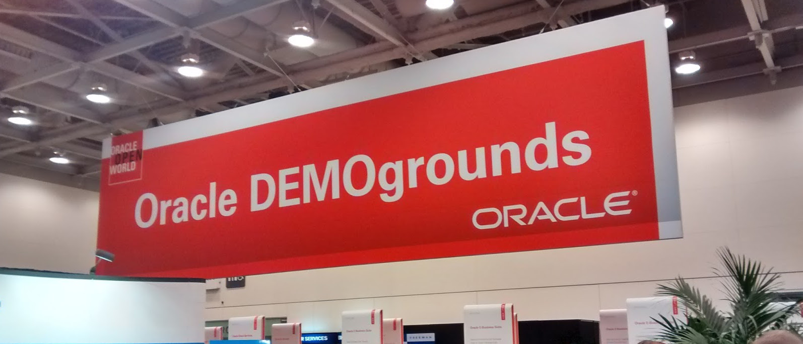

|
|
This was first published on https://blog.dbi-services.com/oow15-day-3-thoughts-from-demogrounds-about-size-auto (2015-10-28)
Republishing here for new followers. The content is related to the the versions available at the publication date
If you are at Oracle Open world, don’t miss the DemoGrounds where you can talk to product managers and developers. It’s a good way to know how and why something is implemented. They also listen to you user experience on their product, for possible evolution. But remember they are not there to receive complaints or answer your SR… Of course, I had a lot of very interesting discussions about current and future versions. I’m posting here just one idea that came to my mind after that, about plan stability, histograms and FOR ALL COLUMN SIZE 1 
Do you like histograms or not? They are good for ad-hoc queries, reporting, BI because they help to find the optimal execution plan. But in OLTP where you want plan stability and you want to share plans, having an execution plan that fits for all execution values (and not only those from first execution – bind variable peeking), you don’t want histograms. Read at the first philosophy post on Jonathan Lewis blog about that.
All that means that sometimes, in specific context, I have recommended to use ‘FOR ALL COLUMN SIZE 1′ instead of the default ‘FOR ALL COLUMN SIZE 1′. No histograms by default. I you need them for specific column, then set table preference for it.
But today, I realize that there is something wrong in that recommendation because the solution does not address the requirement. The requirement was not: have no histograms The requirement was: don’t use histograms
My recommendations (SIZE 1) is the solution for the first one. But the solution for the second one is:
SQL> alter session set "_optimizer_use_histograms"=false;
If what I want is not to use histograms, then this is the solution: disable the use of histograms. Of course, I can say this now that I have validated that this is the goal of this parameter. It’s undocumented so you can’t rely only on its name or description. Ask support and they check internal documentation or ask the developers.
I don’t recommend anything here as a silver bullet. The only recommendation is: think about what you need and find the solution that fits to it. If I want to use histograms only for few columns that I use with literals then the right solution is to keep “_optimizer_use_histograms”=true and gather SIZE 1 by default and set table preferences for the specific columns. But if you just don’t want to use histograms and don’t want to manage which column has histograms or not, then disable the feature for the session that don’t need it. Other sessions may benefit from it.
{kind=link}